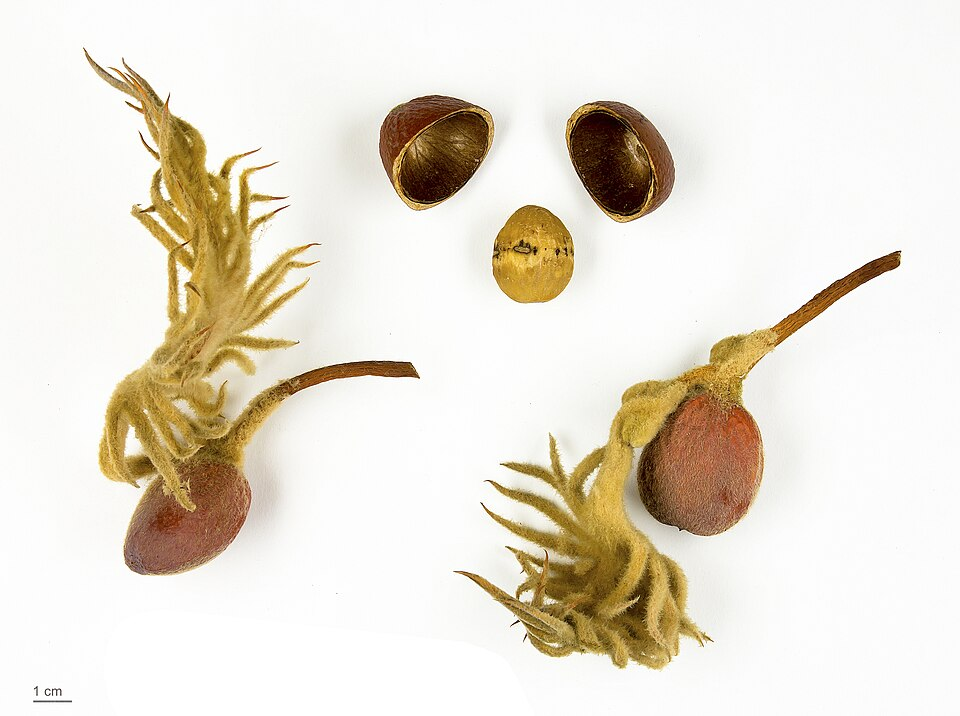
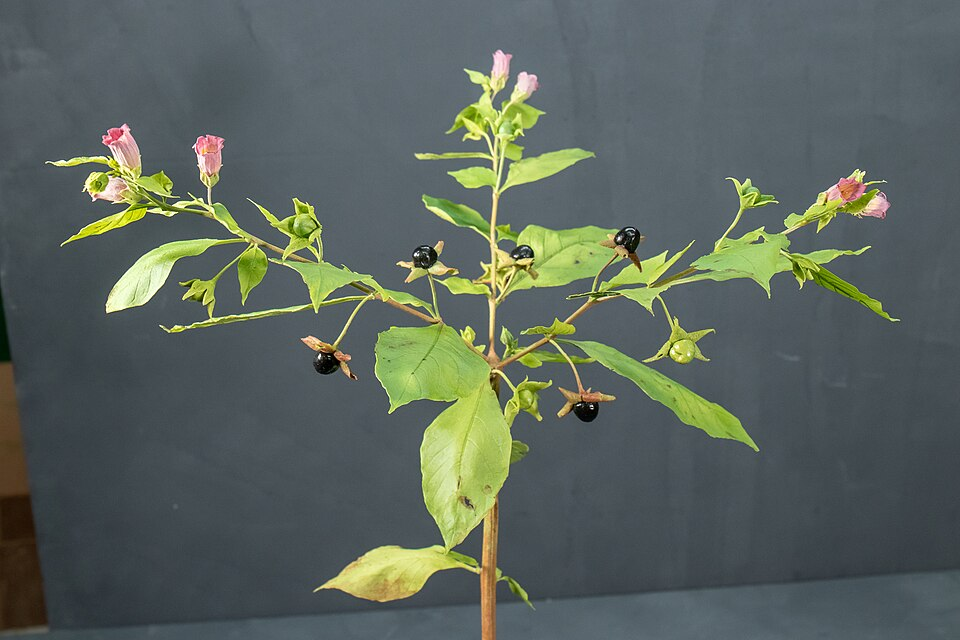
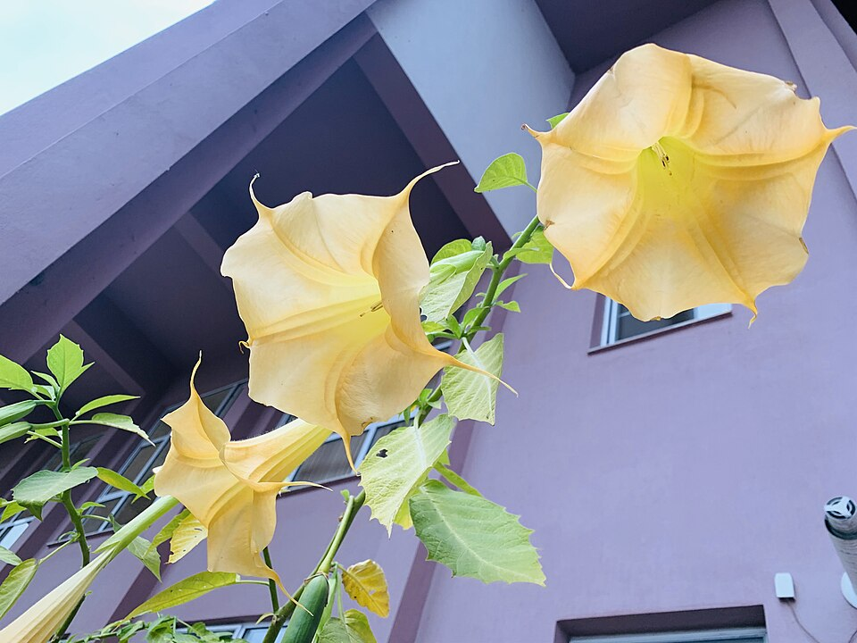
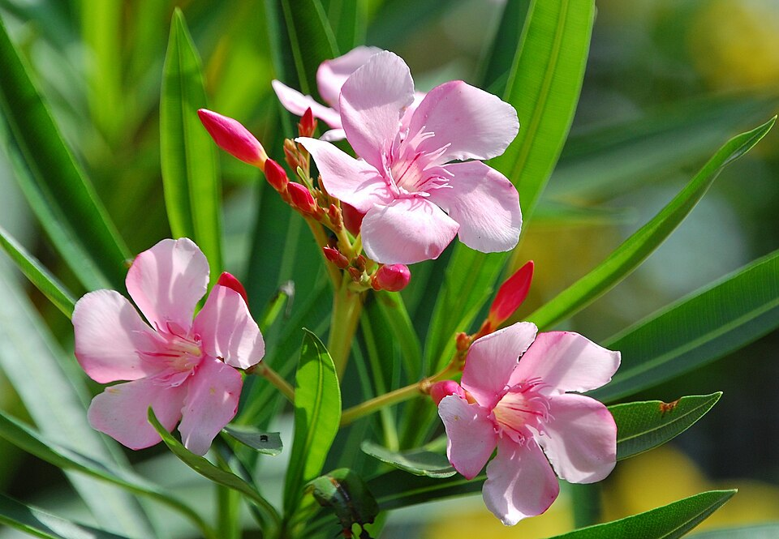
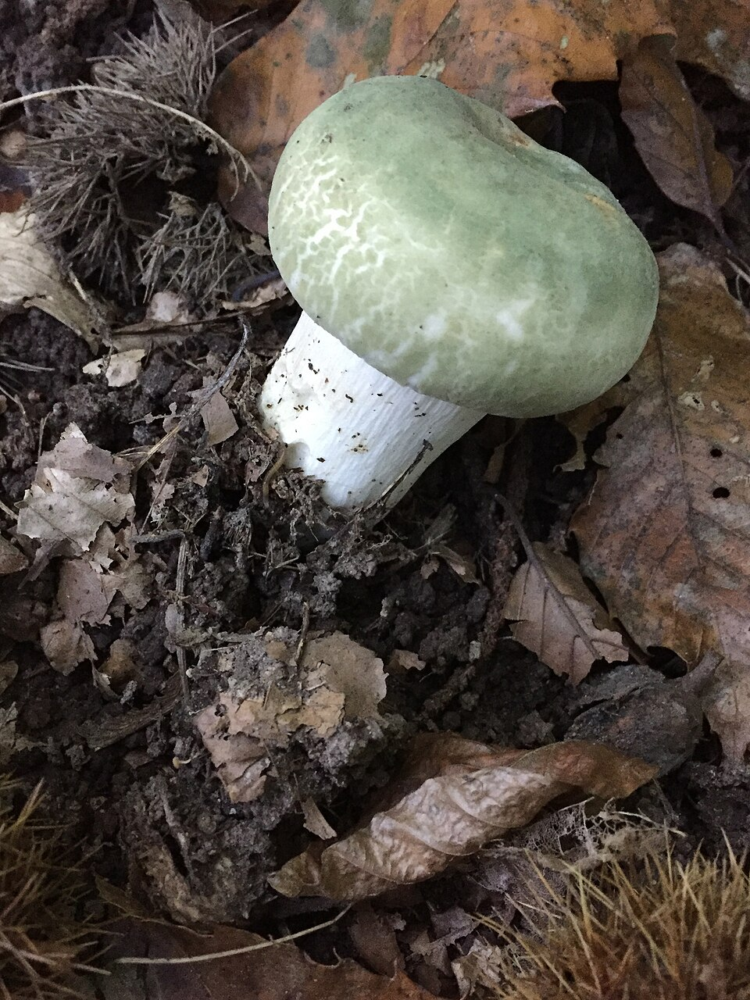
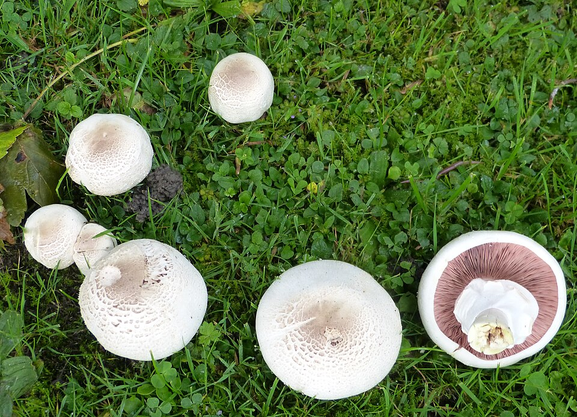

📑 Contents
Safety in Natural Medicine
Plant Identification: Absolute Certainty Required
More people die from misidentifying medicinal plants than from any other herbal error. You must be 100% certain of a plant's identity before using it.
The Multi-Feature Rule
Confirm identity using at least three separate features from different categories:
- Leaf — shape, arrangement (opposite/alternate), margin (smooth/serrated/lobed), texture, smell when crushed
- Flower — number of petals, colour, arrangement, season
- Bark — texture, colour, pattern (smooth/fissured/peeling)
- Fruit/seed — shape, colour, arrangement, season
- Habitat — elevation, soil type, water proximity, sun/shade
- Growth form — tree/shrub/herb/vine, height, branching pattern
- Root — taproot/fibrous/rhizome/tuber (dig up only if necessary and certain)
Never Identify By
- Leaf alone (hemlock looks like wild carrot, foxglove looks like comfrey)
- Flower alone (monkshood looks like larkspur)
- A photo from memory — plants vary by season, region, and age
- "It looks like…" — deadly plants often look like edible ones
Most Dangerous Australian Look-Alikes
This table covers the most important plant misidentifications in Australia — plants that have actually killed or hospitalised people in this country.
| Dangerous Plant | Photo | Mistaken For | Location | Toxic Part | What Happens | |----------------|-------------|----------|------------|--------------| | Cycads (Cycas, Macrozamia, Lepidozamia) |

| Edible nuts/palm heart | All states (tropical to temperate) | Seeds, stems, all parts | Liver failure, neurological damage, death. Seeds contain cycasin — extreme carcinogen and neurotoxin. Cases documented from bush tucker experiments. | | Deadly nightshade (Atropa belladonna) |
| Edible berries | Naturalised in disturbed areas across southern Australia | All parts, especially berries (sweet tasting) | Hallucinations, seizure, respiratory failure. Berries look like small black cherries. | | Angel's trumpet (Brugmansia species) |
| Ornamental curiosity | Common garden escape in QLD, NSW, VIC | All parts — tropane alkaloids | Hallucinations (terrifying), hyperthermia, death. Particularly dangerous because people deliberately consume it. Kills every year. | | Oleander (Nerium oleander) |
| Nothing (curiosity poisoning) | Common ornamental across all Australia | All parts — cardiac glycosides | Heart arrhythmia, cardiac arrest. ONE LEAF can kill an adult. Do not use branches for cooking skewers or fire. Do not camp under oleander. | | Castor oil plant (Ricinus communis) | | Nothing specific (curiosity) | Widespread weed, all states | Seeds — ricin | 1-2 seeds kill a child. 3-5 seeds kill an adult. No antidote. Ricin causes massive gastrointestinal bleeding and organ failure over 2-5 days. |
| Death cap mushroom (Amanita phalloides) |
| Nothing specific (curiosity) | Widespread weed, all states | Seeds — ricin | 1-2 seeds kill a child. 3-5 seeds kill an adult. No antidote. Ricin causes massive gastrointestinal bleeding and organ failure over 2-5 days. |
| Death cap mushroom (Amanita phalloides) | 
| Edible field mushrooms | Canberra, Melbourne, Adelaide regions (spreading). Under oak trees. | All parts — amatoxin | Liver and kidney failure. Symptoms delayed 6-24 hours (you feel fine, then you're dying). Hospital dialysis may save you. Responsible for 90% of mushroom poisoning deaths worldwide. Has killed multiple Australians. | | Yellow-staining mushroom (Agaricus xanthodermus) |
| Edible field mushroom | Common in lawns and parks across southern Australia | Fruiting body | Severe gastrointestinal illness. Stains yellow when bruised — otherwise looks identical to safe mushroom. | | Green cestrum (Cestrum parqui) | | Edible leafy greens | Naturalised weed, all eastern states | All parts — alkaloids | Liver damage, neurological symptoms. Has killed livestock and hospitalised people mistaking it for edible greens. |
| Hemlock (Conium maculatum) |
| Edible leafy greens | Naturalised weed, all eastern states | All parts — alkaloids | Liver damage, neurological symptoms. Has killed livestock and hospitalised people mistaking it for edible greens. |
| Hemlock (Conium maculatum) |  | Wild carrot, wild parsnip, parsley | Naturalised along waterways in SE Australia, Tasmania | All parts — coniine | Paralysis, respiratory failure. The plant Socrates was executed with. Smells of mouse urine when crushed. |
| Coral tree (Erythrina species) |
| Wild carrot, wild parsnip, parsley | Naturalised along waterways in SE Australia, Tasmania | All parts — coniine | Paralysis, respiratory failure. The plant Socrates was executed with. Smells of mouse urine when crushed. |
| Coral tree (Erythrina species) |  | Nothing specific | Ornamental and naturalised across Australia | Seeds | The bright red seeds are attractive to children. Cause paralysis and respiratory failure. Multiple hospitalisations annually. |
| Nothing specific | Ornamental and naturalised across Australia | Seeds | The bright red seeds are attractive to children. Cause paralysis and respiratory failure. Multiple hospitalisations annually. |
Australian mushroom safety: Do not eat wild mushrooms in Australia unless you are an EXPERT. Even experts make mistakes — the death cap is a recent introduction and is still spreading into new areas. There is NO reliable "home test" for mushroom toxicity. Rice test, silver coin test, skin contact test — all are MYTHS. They will not protect you.
If You Suspect Poisoning
- Do NOT induce vomiting unless specifically directed — some toxins cause more damage coming back up
- Activated charcoal if available (burnt hardwood, crushed to powder)
- Hydrate if conscious and able to swallow
- Seek any available medical help immediately
Dosage: Start Low, Go Slow
Every body responds differently to plant medicines. The dose that helps one person might harm another.
Core Principles
- Start with 1/4 the recommended dose the first time you use any new plant
- Wait 24 hours before increasing dose — observe for any reaction
- Increase gradually — never double a dose; increase by no more than 50% at a time
- Document responses — keep a simple log of what you took and how you felt
- Stop immediately if any adverse reaction occurs
Body Weight Adjustment
Dosages assume a 70 kg adult. Adjust for body weight: - 50 kg: 70% of adult dose - 35 kg (child ~10 years): 50% of adult dose - 20 kg (child ~5 years): 30% of adult dose - Under 20 kg: Avoid most herbal medicines unless specifically noted safe
Duration
- Acute conditions: 3–7 days maximum at full dose, then reassess
- If no improvement in 3–5 days: The remedy is not working — stop and reassess
Allergies: Always Patch Test
Plant allergies are common and unpredictable. You can be allergic to a plant even if you're not allergic to anything else.
Patch Test Protocol
- Crush a small amount of the plant material
- Apply to a small area (2 cm × 2 cm) on the inside of your forearm
- Cover with a clean cloth or bandage
- Wait 24 hours
- Check for: redness, itching, swelling, blisters, rash
- If ANY reaction occurs — do NOT use this plant
- If no reaction after 24 hours — still start with 1/4 dose when taken internally
Plants with Higher Allergy Risk
- Eucalyptus (contact dermatitis in sensitive individuals)
- Tea tree (skin irritation in ~5% of people)
Pregnancy & Breastfeeding
Plants KNOWN to be Dangerous in Pregnancy
These must be completely avoided: - Corkwood (Duboisia myoporoides) — anticholinergic, can cross placenta
Relatively Safe in Pregnancy (food quantities only)
- Native ginger (Alpinia caerulea) — mild, food amounts only
Breastfeeding
Many plant compounds pass into breast milk. Assume any active medicinal plant will reach the infant. Use only when absolutely necessary and monitor the infant for any reaction.
Children
Children are not small adults. Their livers process compounds differently, and their smaller body mass means standard doses can be toxic.
Principles for Children
- Avoid unless necessary — children's bodies often recover without intervention
- Dose by weight — never give a full adult dose
- Start with external applications — poultices and salves before internal medicines
- Gentle herbs only — native ginger (mild), lemon myrtle (dilute)
- Avoid corkwood entirely — Duboisia myoporoides is toxic
Age-Specific Guidelines
| Age | Approach |
|---|---|
| Under 6 months | No herbal medicine (breastmilk only if nursing) |
| 6 months – 2 years | Extremely limited — gentle infusions only in very dilute form |
| 2–6 years | Mild infusions only at 1/4 adult dose by weight |
| 6–12 years | Standard children's herbs at 1/3–1/2 adult dose by weight |
| 12+ years | Can approach adult dosing, still start conservative |
Honey Warning
Do NOT give honey to children under 12 months. Botulism spores in honey are harmless to adults but can be fatal to infants. In a survival context, assume any honey is unpasteurised.
Storage & Shelf Life
Improperly stored herbs lose potency or grow mould. Mouldy herbs can cause liver damage.
Storage Guidelines
- Dried herbs: Cool, dark, dry place — 6–12 months
- Tinctures: Dark glass, cool place — 2–5 years
- Salves: Cool, dark place — 6–12 months
- Syrups: Cool, dark place — 2–6 months
- Fresh plants: Use immediately or within 24 hours
Signs of Spoilage
- Mould (visible fuzz, spots)
- Musty or rancid smell
- Change in colour
- Moisture in dried herbs (should be crisp)
- Syrup: fermentation (bubbles, sour smell)
When in doubt, throw it out. A spoiled remedy can cause more harm than the condition you're treating.
The Safety Checklist
Before using any medicinal plant, confirm all of the following:
- [ ] I have positively identified this plant using at least three features
- [ ] I have checked it against the toxic look-alikes list
- [ ] I understand which part of the plant to use
- [ ] I know the correct preparation method for this plant part
- [ ] I have performed a patch test and waited 24 hours with no reaction
- [ ] I am starting with 1/4 the recommended dose
- [ ] I know the contraindications for my situation (pregnancy, age, etc.)
- [ ] I have a way to document what I took and the result
- [ ] I will stop immediately if any adverse reaction occurs
If you cannot check every box, do not proceed.